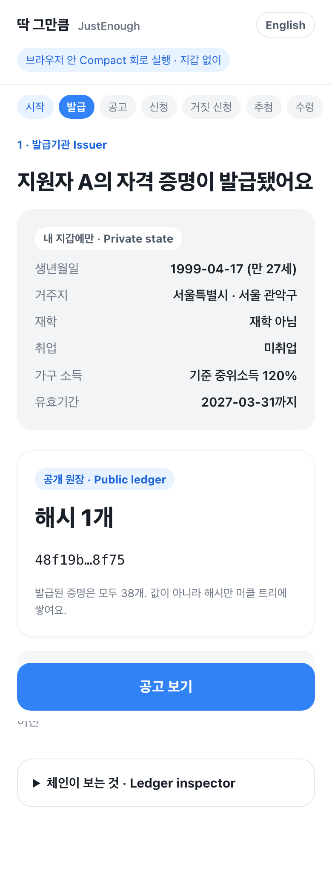
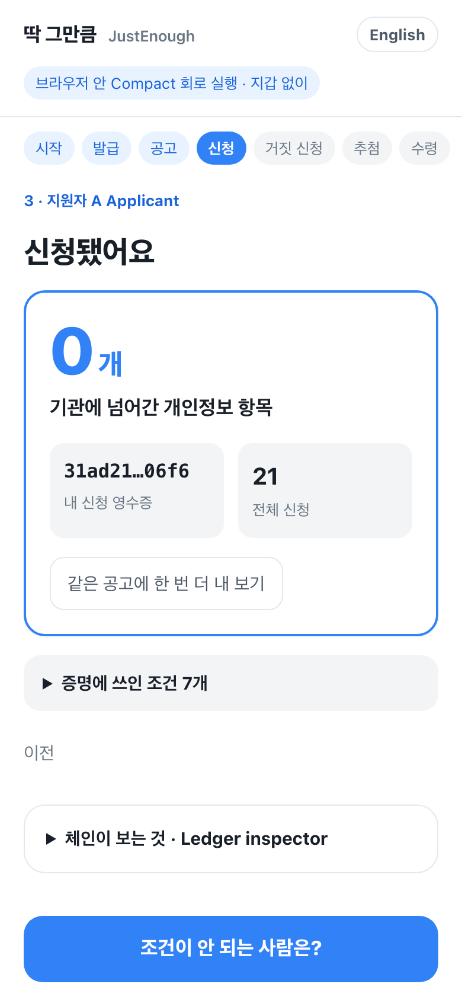
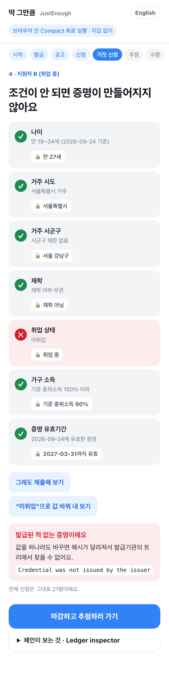
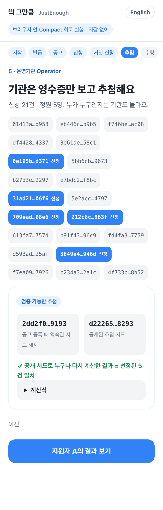

Midnight Korea Hackathon 2026 · Privacy-first DApp
JustEnough — prove eligibility, not identity.
청년 지원금·장학금·공모에 신청할 때 서류를 내는 대신, “이 공고의 자격 조건을 충족한다”는 사실만 Midnight 위에서 영지식 증명으로 제출합니다.
github.com/Ryugi62/justenough · Apache-2.0 · Compact 0.31.1 / 0.34.0
1문제 · Problem
An institution needs three yes/no answers and receives three whole documents.
개인정보 보호법은 목적에 필요한 최소한만 수집하라고 합니다(제3조·제16조). 그런데 신청자 대부분은 선정되지 않고, 그들의 서류는 확인·보관 대상으로 남습니다.
2해법 · Idea
Keep the eligibility check. Remove the documents.
이미 기록을 가진 기관
자격 증명의 해시 1개만 원장에 올림
issueCredential
증명서는 내 기기에만
“발급된 내 증명이 이 공고 조건을 충족한다”를 증명 1개로 제출
apply → 익명 영수증
공고 조건은 원래 공개 → 그대로 원장에
누가 신청했는지 모른 채 영수증 추첨
closeProgram · selectApplicant
기존 대안인 “기관이 행정 데이터를 직접 조회”해도 기관은 모든 신청자의 원본 기록을 봅니다. 딱 그만큼에서는 기관이 예/아니오와 익명 영수증만 봅니다.
3Midnight 활용 · Dual ledger
Public ledger vs. private state — split on purpose.
| 데이터 | 위치 | 누가 보나 |
|---|---|---|
| 생년월일·거주 시도/시군구·재학·취업·소득 %·유효기간 | 지원자 private state (witness) | 지원자만 |
| 32바이트 비밀키·salt | 지원자 private state | 지원자만 |
증명 커밋 hash(증명, 지원자키, salt) | 공개 HistoricMerkleTree<16> | 누구나 — salt 없이는 역산 불가 |
| 어느 잎을 썼는지 | 어디에도 없음 (멤버십 증명) | 아무도 |
| 공고 조건 (나이 구간·지역·플래그·소득 상한·기준일) | 공개 programs | 누구나 — 원래 공고문 |
영수증 hash(domain, programId, secret)·상태 | 공개 applications | 누구나 — 사람·다른 공고와 연결 불가 |
핵심 회로 · apply
export circuit apply(programId: Bytes<32>): Bytes<32> { const id = disclose(programId); const program = programs.lookup(id); assert(program.status == ProgramStatus.open, "…closed"); const sk = localSecret(); // private const cred = heldCredential(); // private const commitment = credentialCommitment( cred, holderKey(sk), credentialSalt()); const path = credentialPath(commitment); assert(disclose(path.leaf == commitment), …); assert(credentials.checkRoot(disclose( merkleTreePathRoot<16, Bytes<32>>(path))), …); assert(disclose(meetsPolicy(cred, program.policy)), …); const receipt = disclose(nullifierFor(sk, id)); assert(!applications.lookup(id).member(receipt), …); applications.lookup(id).insert(receipt, submitted); applicantCount.lookup(id).increment(1); return receipt; }
① 이 증명은 발급기관 트리에 있다 (어느 잎인지는 숨김)
② 그 증명은 내 것이다 (내 키로 다시 계산한 커밋 = 잎)
③ 그 값이 공고 조건을 충족한다
④ 처음 신청이다 (공고별 영수증)
공개되는 것: 트리 루트 하나, 항상 참인 불리언, 영수증 해시
데모 · 지갑 없이 브라우저에서 컴파일된 회로 실행




보안 · 거짓 신청은 증명이 안 만들어진다
| 시도 | 회로의 답 | 테스트 |
|---|---|---|
| 발급된 적 없는 값으로 신청 | Credential was not issued by the issuer | AC-5 |
| 발급된 증명의 소득만 낮춰서 신청 | Credential was not issued by the issuer | AC-5 |
| 남의 머클 경로 빌려 쓰기 | Merkle path does not belong to this credential | AC-6 |
| 조건 하나만 미달 (나이·지역·취업·소득·유효기간 각각) | Credential does not meet the eligibility policy | AC-7 |
| 같은 공고 두 번 신청 | Already applied to this program | AC-4 |
| 운영기관이 아닌 사람의 마감·추첨 | Only the program operator can do this | AC-9 |
| 선정 안 된 영수증으로 수령 | This application was not selected | AC-10 |
공정성 · Auditable draw
The seed is committed before anyone applies and revealed at closing; anyone can recompute the winners.
seed = hash(공고 id, 기관 비밀키)closeProgram이 시드를 공개하고hash(seed) == commitment를 검사ticket = hash(seed, 영수증)auditDraw가 다른 선택을 잡아냄(테스트)청년 주택·지원금처럼 추첨이 곧 결과인 공공 사업에서, 기관도 신청자도 결과를 조작할 수 없고 누구나 공개 원장만으로 확인합니다. 남는 위험(시드 사전 유출 + 공모)은 공개 난수 비콘 결합으로 로드맵에 명시.
8품질 · Engineering & QA
meetsPolicynpm ci && npm run verify실제 네트워크 · Real proofs
Local Midnight network (midnight-node 1.0.0 · indexer 4.3.3 · proof-server 8.1.0), compactc 0.31.1 — docs/devnet-run.json
| 단계 | 결과 | 블록 | 증명+제출 |
|---|
트랜잭션 8건, 인덱서 공개 상태에서 찾은 속성 값 0건. CI 워크플로(devnet.yml)가 푸시마다 같은 실행을 반복하도록 구성했습니다(npm run devnet:up && npm run devnet:e2e).
실데이터 · 실제 공고 조항 → 회로 조건
| 공고 | 조항 (원문) | 회로 조건 | 회로 밖 (숨기지 않고 표시) |
|---|---|---|---|
| 2026 국방 AI 경진대회 | 대한민국 국적의 청년, 만 19~34세 | 나이 19–34 | 국적 → 발급 범위 |
| 청년 오픈이노베이션 챌린지 | 만 34세 이하 대학(원)생 및 청년 예비창업자 | 나이 ≤34 ∧ 재학 | 예비창업자 경로(OR) |
| 인천관광 혁신아이디어 공모전 | 인천시민 및 인천 소재 학교 재학생·회사 임직원 | 시도 = 28 | 학교·직장 소재지 |
| 서초창업스테이션 컨설팅 | (예비)창업자 * 서초구 거주자 … 우대 | 시군구 = 11650 (우대 트랙) | 창업자 여부 |
| Web3 블록체인 AI융합 해커톤 | 국내 대학 학부 재·휴학생 2~4인 팀 | 재학 | 학부/휴학, 팀 인원 |
| AI기반 통일 아이디어 공모전 | 국내 대학(원)생(충남/충북/세종/대전 소재) | 재학 | 4개 시도 집합 조건 |
| 그린리모델링 콘텐츠 공모전 | 만 19세 이상 일반 국민 | 나이 ≥19 | 국민 여부, 팀 인원 |
원문·URL·확인일은 src/domain/notices.ts. 데모의 “청년 구직 활동 지원금”은 가상 공고로 표시합니다.
도입 경로 · Business
누가 쓰나 — 청년 정책을 운영하는 지자체·공공기관, 대학 장학 부서, 공모전·해커톤 주최
왜 지금 Midnight — 신청 수·추첨 결과는 공개 감사가 필요하고, 신청자 값은 비공개여야 한다. 이중 원장이 정확히 그 모양
팀이 겪는 문제 — 8~9월 두 달간 우리가 추적한 공고 702건: 지원금 222 · 공모 174 · 장학 58 · 대출 78
첫 파일럿 대학 장학: 발급기관 = 학사 시스템, 운영기관 = 장학팀 — 같은 기관이라 외부 연동 0
1단계 공모·해커톤 주최: 나이·재학만
2단계 대학 장학: 재학·소득 구간
3단계 지자체 청년 지원금: 거주·취업·소득 (발급기관 = 이미 행정 데이터를 가진 기관, 해시만 발행)
수익 운영기관 공고당 과금 + 발급 연동 API
한계와 다음 · Roadmap
지금
• 컨트랙트 6회로 컴파일(0.31.1·0.34.0) + 증명 키 생성
• 로컬 Midnight 네트워크 실배포·실증명 8건 (CI 반복)
• 브라우저 데모(지갑 불필요) · 검증 가능한 추첨
• 112개 테스트 · 위협 모델 문서
• 한국어·영어 화면 · 「체인이 보는 것」 패널: 호출마다 공개 값을 다시 훑어 비공개 값 0건 표시
다음
1. Preprod 배포 (스크립트 준비 완료, 테스트넷 토큰만 남음)
2. 지갑(Lace) 연결 모드 — 같은 포트, midnight-js 어댑터
3. 발급기관 어댑터·다중 발급기관, 집합·OR 조건, 폐기, 난수 비콘
남는 위험: 발급 시점과 신청 시점의 연관, 익명 집합 크기(루트 이전 발급 수) — 배치 발급과 과거 루트 증명으로 완화.
13직접 확인하기
compact update 0.31.1 git clone https://github.com/Ryugi62/justenough && cd justenough npm ci && npm run verify # 컴파일 → 타입체크 → 112 테스트 → 빌드 npm run preview # 브라우저 데모, 지갑 불필요 npm run devnet:up && npm run devnet:e2e # 실제 네트워크·실제 증명 (Docker)
딱 그만큼 — 필요한 만큼만 증명하고, 나머지는 내 기기에.
14